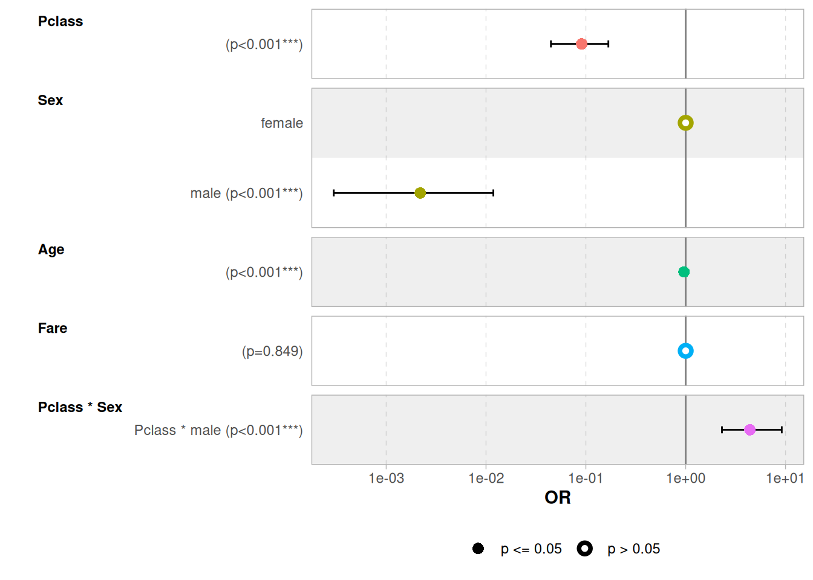

# install.packages("reshape")
# install.packages("ggstats")
library(reshape)
library(ggstats)
Attaching package: 'ggstats'The following object is masked from 'package:reshape':
round_anylibrary(tidyverse)── Attaching core tidyverse packages ──────────────────────── tidyverse 2.0.0 ──
✔ dplyr 1.1.4 ✔ readr 2.1.5
✔ forcats 1.0.0 ✔ stringr 1.5.1
✔ ggplot2 3.5.1 ✔ tibble 3.2.1
✔ lubridate 1.9.4 ✔ tidyr 1.3.1
✔ purrr 1.0.2 ── Conflicts ────────────────────────────────────────── tidyverse_conflicts() ──
✖ tidyr::expand() masks reshape::expand()
✖ dplyr::filter() masks stats::filter()
✖ dplyr::lag() masks stats::lag()
✖ dplyr::rename() masks reshape::rename()
✖ lubridate::stamp() masks reshape::stamp()
ℹ Use the conflicted package (<http://conflicted.r-lib.org/>) to force all conflicts to become errors# install.packages("caret")
library(titanic)
library(randomForest)randomForest 4.7-1.2
Type rfNews() to see new features/changes/bug fixes.
Attaching package: 'randomForest'
The following object is masked from 'package:dplyr':
combine
The following object is masked from 'package:ggplot2':
marginlibrary(caret)Loading required package: lattice
Attaching package: 'caret'
The following object is masked from 'package:purrr':
lifttitanic_train %>%
filter(!is.na(Age)) %>%
mutate(Survived = factor(Survived),
Pclass = factor(Pclass),
Sex = factor(Sex)) %>%
randomForest(formula = Survived ~ .)
Call:
randomForest(x = ., formula = Survived ~ .)
Type of random forest: unsupervised
Number of trees: 500
No. of variables tried at each split: 3# ggstats::ggcoef_model()
model <- glm(Survived ~ Pclass*Sex + Age + Fare, data = titanic_train, family = binomial)
model$coefficients %>% exp() (Intercept) Pclass Sexmale Age Fare
2.744361e+03 9.091208e-02 2.196845e-03 9.624645e-01 1.000455e+00
Pclass:Sexmale
4.402099e+00 ggcoef_model(model, exponentiate = TRUE)